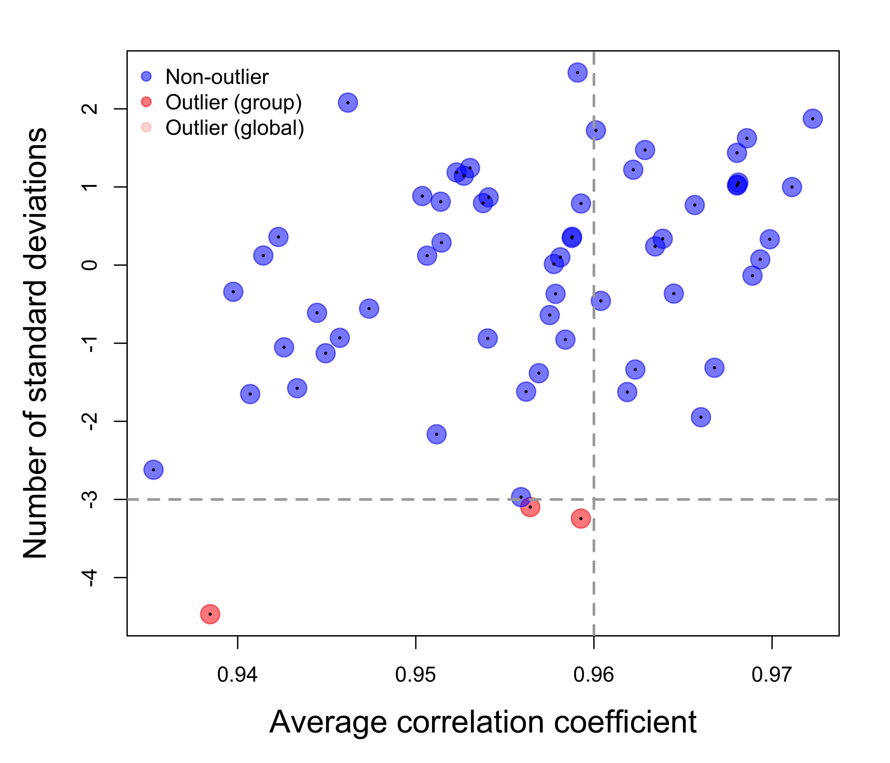

Introduction The goal of this procedure is to identify potential outlier samples that have lower inter-sample correlation than expected. It is based on the assumption that the outliers have poorer correlation to other samples in the same group. This procedure includes the following steps:
This procedure requires the following inputs:
Comparison between cell lines from 9 different cancer tissues (NCI-60); GSE5949
Reinhold WC, Reimers MA, Lorenzi P, Ho J et al. Multifactorial regulation of E-cadherin expression: an integrative study. Mol Cancer Ther 2010 Jan;9(1):1-16. PMID: 20053763.
Comparison between cell lines from 9 different cancer tissue of origin types (Breast, Central Nervous System, Colon, Leukemia, Melanoma, Non-Small Cell Lung, Ovarian, Prostate, Renal) from NCI-60 panel
The data set includes 17647 genes and 60 samples in 9 groups.
The following steps were applied to identify outlier samples:
As a result, 3 outliers were identified: Colon_GSM134050, Kidney_GSM134284, Skin_GSM134115. Click here to view full result table.

Figure 1 Each dot represents a sample. The x-axis is the average correlation correlation between each sample and other samples of the same group (larger groups) or the whole data set (smaller groups). The y-axis is the number of standard deviations of each sample away from the averages of the other samples. Red indicates ouliter samples (in larger groups) identified as outliers by comparing them to all the other samples in the same group. Pink indicates outlier samples (in smaller groups) identified as outliers by comparing them to the other samples in the whole data set. The within gorup comparison generally provides stronger evidence of determing outliers. On the other hand, depending on how the samples are grouped in the data set, the evidence supporting global outliers varies, and should be evaluated further before determining they are indeed outliers. The remaining analyses of this report will only be applied to outliers identified by within group comparison.
Each outlier was compared to the average of non-outlier samples in the same group through the scatterplot of all genes. Click sample ID below to view scatterplots of outlier vs. non-outliers (left panel) and one of the non-outliers vs. the other non-outliers (right panel).
Figure 2 Clustering of outliers based on their difference with the non-outliers in the same group. If multiple outliers have similar global pattern of changes relative to their non-outliers, these outliers could be the consequence of the same systematic bias. With the cutoff of correlation coefficient equal to 0.5, the following outliers are clustered together:
No outliers can be grouped together.
Top genes having the biggest difference between outlier and corresponding non-outliers can provide very valuable information about the cause of the outliers. The following criteria are used to select top genes with most changes in the outliers comparing to the average of their corresponding non-outliers:
Table 1. The numbers of top genes selected from each outlier.
Top genes selected from each outliers by the last step were mapped to predefined genesets collected from:
The full gene set collection of a few model animals can be downloaded from here.
Enrichment of each gene set in top genes was tested by Hypergeometric test.
Table 2A. The number of gene sets significantly enriched in top increasing genes of each outlier.
| BioSystems | KEGG | MSigDb | OMIM | PubTator | |
|---|---|---|---|---|---|
| Colon_GSM134050 | 273 | 26 | 623 | NULL | 129 |
| Kidney_GSM134284 | 268 | 16 | 611 | NULL | 129 |
| Skin_GSM134115 | 689 | 34 | 1359 | NULL | 2244 |
Table 2B. The number of gene sets significantly enriched in top decreasing genes of each outlier.
| BioSystems | KEGG | MSigDb | OMIM | PubTator | |
|---|---|---|---|---|---|
| Colon_GSM134050 | 207 | 15 | 682 | NULL | 102 |
| Kidney_GSM134284 | 444 | 20 | 1009 | NULL | 118 |
| Skin_GSM134115 | 280 | 17 | 873 | NULL | 84 |
Check out the RoCA home page for more information.
To reproduce this report:
Find the data analysis template you want to use and an example of its pairing YAML file here and download the YAML example to your working directory
To generate a new report using your own input data and parameter, edit the following items in the YAML file:
Run the code below within R Console or RStudio, preferablly with a new R session:
if (!require(devtools)) { install.packages('devtools'); require(devtools); }
if (!require(RCurl)) { install.packages('RCurl'); require(RCurl); }
if (!require(RoCA)) { install_github('zhezhangsh/RoCAR'); require(RoCA); }
CreateReport(filename.yaml); # filename.yaml is the YAML file you just downloaded and edited for your analysisIf there is no complaint, go to the output folder and open the index.html file to view report.
## R version 3.3.3 (2017-03-06)
## Platform: x86_64-apple-darwin13.4.0 (64-bit)
## Running under: OS X Yosemite 10.10.5
##
## locale:
## [1] en_US.UTF-8/en_US.UTF-8/en_US.UTF-8/C/en_US.UTF-8/en_US.UTF-8
##
## attached base packages:
## [1] stats graphics grDevices utils datasets methods base
##
## other attached packages:
## [1] DEGandMore_0.0.0.9000 snow_0.4-2 gplots_3.0.1
## [4] htmlwidgets_0.9 DT_0.2 awsomics_0.0.0.9000
## [7] yaml_2.1.16 rmarkdown_1.8 knitr_1.18
## [10] RoCA_0.0.0.9000 RCurl_1.95-4.9 bitops_1.0-6
## [13] devtools_1.13.4
##
## loaded via a namespace (and not attached):
## [1] Rcpp_0.12.14 magrittr_1.5 highr_0.6
## [4] stringr_1.2.0 caTools_1.17.1 tools_3.3.3
## [7] KernSmooth_2.23-15 withr_2.1.1 htmltools_0.3.6
## [10] gtools_3.5.0 rprojroot_1.3-2 digest_0.6.13
## [13] memoise_1.1.0 evaluate_0.10.1 gdata_2.18.0
## [16] stringi_1.1.6 backports_1.1.2 jsonlite_1.5END OF DOCUMENT
{kind=link}
{kind=link}
{kind=link}